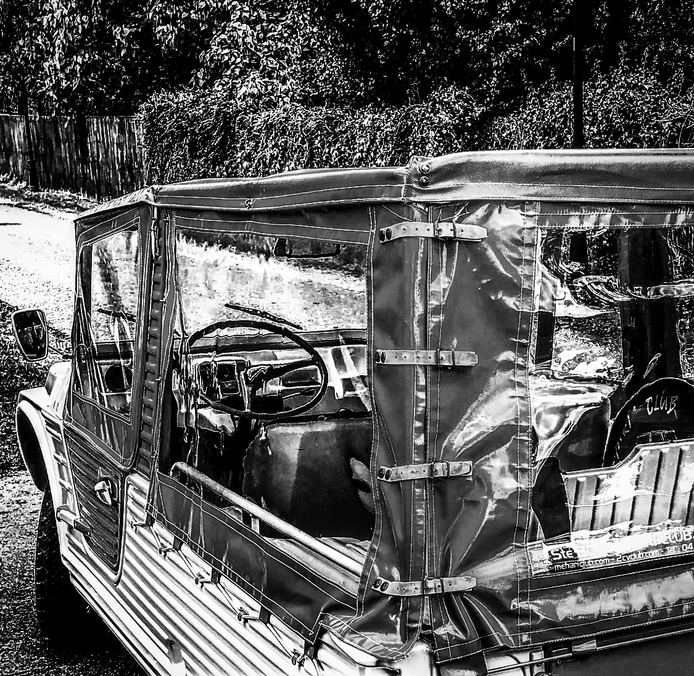

Section

Dans cette section ASTUCES,
retrouvez le plan de fabrication qui vous permettra de
réparer votre Tubulaire arrière.
Aussi restaurez vos Câbles à moindre cout
avec une astuce simple. Le Plancher Avant
de
méhari est souvent soumis à de la casse, donc grâce à cette astuce
renforcez le. Le places arrière sont plus facilement accessible à
l’aide d’un Siege Basculant, un montage
simple a réaliser soit même. Le Démontage
obligatoire du Pare-Brise
est souvent le point noir de la restauration, retrouvez les astuces et
infos sur cette étape. La bâche complète est soutenue par des Tubes,
reconstituez cette ossature à l’aide de plans. Vous faites du stockage
hivernale ou
quotidien, les plans d’une Bâche de Protection
sont disponibles. Autre astuce, l’amélioration de la fermeture des
Hauts de Portes qui s’ouvrent ou claquent
aux
grés des vents.Les Moyeux arrières
nécessite une Clé spéciale, fabriquez la
a l’aide du plan. Et pour
conclure, une astuce Carrosserie pour
réparer et peindre celle-ci.